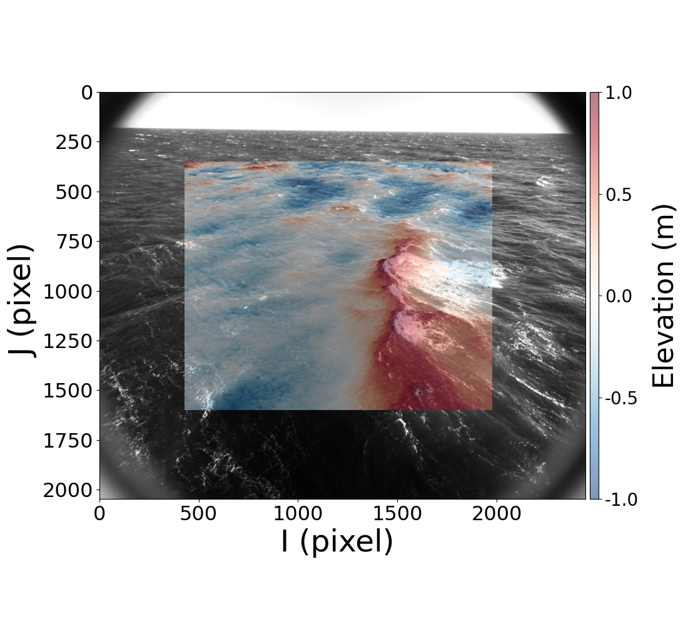

Selected Projects
-
Directional Phase-Resolved Observations of Breaking Waves

Assisted in developing software and hardware for data acquisition and analysis. The stereo IR and visible camera system is deployed at ASIT MVCO.
-
Wave Flume
Designed and built a 1-meter demo wave tank with controllable plunger for lab-based wave generation and dissipation experiments. -
Portable Airborne Mapping System
Designed standalone payload for aerial mapping.